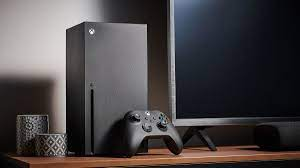
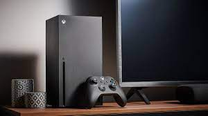

About
The latest video game news, discussions, announcements,
industry gossip,
sales figures, bargains and reviews. The pulse of the gaming industry.
From Wikipedia, the free encyclopedia
This is a list of games for the PlayStation 5.
Physical games are sold on Ultra HD Blu-ray and digital games
can be purchased through the PlayStation Store.
The PlayStation 5 is backwards compatible with all but six PlayStation 4 games.
[1] This list only includes games that are released natively for PlayStation 5.
PlayStation VR2 and backwards compatible games are excluded.[2]
There are currently 627 games on this list.
From Wikipedia, the free encyclopedia
The history of video games began in the 1950s and 1960s as
computer scientists
began designing simple games and simulations on minicomputers and mainframes.
Spacewar! was developed by Massachusetts Institute of Technology (MIT) student hobbyists
in 1962 as one of the first such games on a video display.
The first consumer video game hardware was released in the early 1970s.
The first home video game console was the Magnavox Odyssey,
and the first arcade video games were Computer Space and Pong.
After its home console conversions, numerous companies sprang up to capture
Pong's success in both the arcade and the home by cloning the game,
causing a series of boom and bust cycles due to oversaturation and lack of innovation.
Most Popular Platforms
- PS5
- XBox
- Nintendo
- Steam
Most Popular Games
- Grand Theft Auto 5
- EA FC24
- Call of Duty
- Fortnite
 
